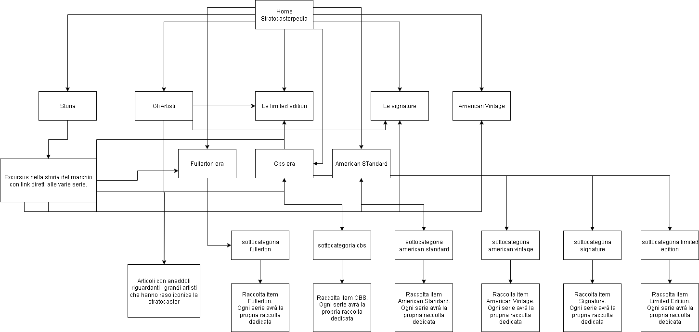
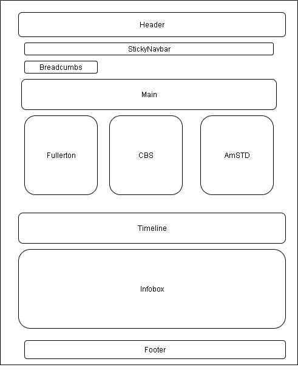

Web Project Plan – Stratocasterpedia
1. Introduzione
Origine dell'idea e scelta del soggetto:L'idea di Stratocasterpedia nasce dalla mia profonda passione per le chitarre, e in particolare per la Fender Stratocaster, uno strumento che ho avuto il privilegio di possedere per oltre un lustro. Può sembrare strano aver scelto la Stratocaster come soggetto di questo progetto, dato che, in origine, si tratta di un oggetto concepito per essere uno strumento di uso quotidiano. Leo Fender progettò la Stratocaster per abbattere i costi di lavorazione e di stoccaggio, creando così un prodotto standardizzato e altamente fruibile. Eppure, nonostante le sue origini "banali", la Stratocaster è riuscita a trasformarsi in un’icona, grazie alla sua presenza capillare sul mercato e alle innumerevoli sfaccettature che ne hanno fatto uno strumento unico.
Mappa Concettuale:

- Obiettivi principali:
- Divulgazione: Fornire informazioni esaustive sulla storia, le serie e le caratteristiche delle Stratocaster.
- Catalogazione: Creare un database dettagliato di esemplari basato sullo standard Dublin Core, rendendo i metadati accessibili a collezionisti e appassionati.
- Valutazione qualitativa: Introdurre, in una fase futura, una sezione per la valutazione degli esemplari, concentrandosi su aspetti quali l’originalità e la coerenza delle componenti rispetto alla serie e al periodo storico.
- Target di riferimento:
- - Appassionati di chitarra e musica
- - Collezionisti di strumenti musicali
- - Professionisti e studiosi del settore musicale
2. Descrizione del Progetto
Il progetto si ispira sia alla tradizione divulgativa di siti come FuzzFaced.net – che, pur offrendo un’ampia quantità di informazioni, risulta dispersivo e manca di un focus chiaro sulla Fender Stratocaster – sia ai modelli dei siti commerciali di strumenti musicali, in particolare Thomann, che si contraddistinguono per la ricchezza delle descrizioni e l’uso di caroselli e lettori audio. Mentre FuzzFaced ha evoluto il proprio contenuto nel tempo, passando da un blog personale a un sito informativo che include anche altri argomenti (come la Gibson Les Paul, i pedalini per chitarra e una sezione dedicata alla strumentazione personale del creatore), Stratocasterpedia si propone di concentrarsi esclusivamente sulla Fender Stratocaster. Grazie alla catalogazione tramite Dublin Core, la navigazione del sito consente all’utente di selezionare il modello di interesse (ad es. American Standard) e di accedere a pagine dedicate che illustrano la storia, le serie (come le tre serie dell’American Standard) e, infine, la catalogazione dettagliata degli esemplari.
3. Analisi dei Competitor
- FuzzFaced.net:
Aspetti positivi:
- Offre un’ampia divulgazione e approfondimenti tematici che spaziano non solo sulla Fender Stratocaster, ma anche su altri argomenti correlati, come la Gibson Les Paul e i pedalini per chitarra.
- Presenta una sezione dedicata alla strumentazione personale del creatore, elemento che aggiunge un tocco personale e unico al sito.
- Ha beneficiato nel tempo di collaborazioni con partner importanti (ad es. Thomann e strumenti musicali.net), che ne hanno accresciuto l’autorevolezza.
- Il sito risulta dispersivo: pur parlando prevalentemente di Fender Stratocaster, non mantiene un focus esclusivo su di essa, trattando molteplici argomenti che ne confondono l’identità.
- L’evoluzione da blog personale a sito informativo ha portato a una struttura che manca di coerenza, con sezioni che non sempre si allineano con il nucleo tematico principale.
- La navigazione può risultare poco intuitiva per chi cerca informazioni specifiche sulla Stratocaster, a causa della mancanza di una catalogazione organizzata e rigorosa.
- Focus Tematico: Il sito è dedicato esclusivamente alla Fender Stratocaster, garantendo contenuti mirati e approfonditi.
- Catalogazione Rigorosa: L’utilizzo dello standard Dublin Core permette di organizzare le informazioni in modo chiaro e facilmente consultabile; dalla home page l’utente può selezionare il modello di interesse (ad es. American Standard), accedere a pagine dedicate che illustrano le varie serie e visualizzare la catalogazione dettagliata degli esemplari (al momento sono presenti due esempi, con la prospettiva di ampliarsi nel tempo).
- Funzionalità Interattive: L’integrazione di timeline, caroselli di immagini, lettori audio e una barra di ricerca rende l’esperienza utente moderna e interattiva, unendo lo stile funzionale dei siti di vendita a quello descrittivo dei portali divulgativi.
- La realizzazione di tabelle riassuntive contenenti le specifiche tecniche di ogni strumento.
- L'integrazione di un lettore per i sample audio.
- L'uso di caroselli per la presentazione delle immagini, elementi fondamentali per una catalogazione accurata e dettagliata.
- Raccontare storie e aneddoti legati agli strumenti.
- Creare contenuti che coinvolgano gli utenti e li invitino a condividere la propria esperienza.
- Integrare sezioni editoriali che affianchino la parte analitica, offrendo una visione completa e sfaccettata dello strumento.
- HTML5
- CSS
- Timeline JS Utilizzato per visualizzare in maniera interattiva la storia evolutiva della Stratocaster.
- Caroselli di Immagini: Due caroselli, ciascuno associato a un item catalogato tramite Dublin Core, per permettere la visualizzazione dettagliata delle immagini degli esemplari.
- Lettori Audio JS: Due lettori dedicati alla riproduzione dei sample audio relativi agli esemplari, migliorando l’esperienza sonora degli utenti.
- JS per Barra di Ricerca: Implementato per consentire una rapida e precisa ricerca degli item all’interno del database.
- Dublin Core: Utilizzato per l’indicizzazione dei metadati delle pagine (nella sezione head) e per catalogare gli item nel body, garantendo una gestione strutturata e accessibile delle informazioni.
- Creazione di annunci mirati che evidenzino l’unicità del progetto e il focus esclusivo sulla Fender Stratocaster.
- Utilizzo di parole chiave specifiche per attrarre appassionati e collezionisti.
- Monitoraggio costante delle performance degli annunci e ottimizzazione delle campagne per massimizzare la visibilità e il traffico al sito.
- Stesura di articoli dedicati ai chitarristi che hanno fatto la storia del marchio, con approfondimenti su figure come Clapton, David Gilmour, Jimi Hendrix e Steve Ray Vaughan.
- Produzione di contenuti che raccontino la nascita della Fender e l’evoluzione della Stratocaster, evidenziando come uno strumento concepito per essere funzionale sia riuscito a trasformarsi in un’icona grazie alla sua presenza sul mercato e alle sue numerose varianti.
- Questi articoli arricchiranno il sito di contenuti originali e di qualità, rafforzando l’autorità del portale e migliorando il posizionamento SEO.
- Ottimizzazione dei contenuti e dei metadati (grazie all’uso di Dublin Core) per migliorare il posizionamento organico nei motori di ricerca.
- Creazione di approfondimenti tematici relativi alla storia e alle specifiche tecniche delle Stratocaster.
- Utilizzo dei canali social per condividere aggiornamenti, curiosità e anteprime degli esemplari catalogati.
- Collaborazioni con gruppi e forum di appassionati di chitarre e collezionisti.
- Aspetti negativi:
- Punti di forza di Stratocasterpedia:
4. Siti a Cui Mi Sono Ispirato
Per la realizzazione di Stratocasterpedia ho preso ispirazione da due tipologie di siti, ognuna delle quali ha contribuito a definire aspetti differenti del progetto:
Ispirazioni dal Punto di Vista della Catalogazione e Analisi Tecnica:
- Siti come Thomann e strumentimusicali.net hanno fornito spunti preziosi per la parte più analitica del progetto. In particolare, mi hanno ispirato per:
Ispirazioni dal Punto di Vista della Divulgazione e Descrizione:
Da siti come Accordo – blog e community dove appassionati condividono articoli sui loro strumenti preferiti – ho tratto ispirazione per sviluppare la parte più descrittiva e divulgativa del progetto. Questi siti mi hanno insegnato l'importanza di:Stratocasterpedia unisce questi due approcci: da un lato offre una catalogazione precisa e dettagliata, dall’altro propone contenuti divulgativi che raccontano la storia e l’evoluzione della Fender Stratocaster.
5. Tecnologie e Strumenti Utilizzati
Markup e Stili:
JScript e Interattività:
Standard di Indicizzazione:
6. Architettura e Design
Schema delle dipendenze:
Wireframe:

Esperienza Utente e Design Minimalista:
Il design di Stratocasterpedia si ispira alle soluzioni adottate da Thomann, combinando lo stile moderno e funzionale tipico dei siti di vendita di strumenti con l’approccio descrittivo e approfondito dei portali divulgativi. La struttura del sito è concepita per essere minimalista, snella e intuitiva, in modo tale da permettere all'utente di navigare senza sforzo e senza dover "pensare troppo". Per motivi personali ed etici, ho evitato l'uso di colori troppo accesi – in particolare il blu – basandomi anche su studi scientifici che mettono in guardia contro effetti di gamification non voluti. Il risultato è un design sobrio e raffinato, che privilegia l'usabilità e una fruizione semplice e diretta dei contenuti.
7. Promozione e Marketing
Strategia di Pubblicizzazione:
- Campagne Google Ads:
- Contenuti Editoriali e Articoli:
- SEO:
- Social Media e Community:
8. Fonti e Crediti
Testi e fotografie degli item:
Tutti i contenuti testuali e le fotografie degli esemplari presenti su Stratocasterpedia sono stati realizzati e scattati personalmente, garantendo così originalità e autenticità nel racconto e nella documentazione dei modelli.
JavaScript e Librerie Utilizzate:
Tutti i Java Script sono stati tratti ed adattati a partire da quelli reperibili su W3school.